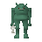

Oyster
| Config name | oystershell |
| Item id | 407 |
| Value | 200 gp |
| Weight | 100g |
| Members | Yes |
| Tradeable | Yes |
| Stackable | No |
| Options | Open |
| Defined in | scripts/skill_fishing/configs/fishing.obj |
Oyster
It's a rare oyster.
Used to make
| Skill | Level | XP | Ingredients | Tool | How | Where | Makes |
|---|---|---|---|---|---|---|---|
| None | 1 | click in pack | 25 in 32 shells hold a pearl; the rest give oysterempty |
Dropped by
| NPC | Level | Quantity | Rarity | Via | Notes |
|---|---|---|---|---|---|
| 14 | 5 | 3/32 (9.38%) | members | ||
| 29 | 5 | 3/32 (9.38%) | members | ||
 River troll | 49 | 5 | 3/32 (9.38%) | members | |
| 79 | 5 | 3/32 (9.38%) | members | ||
| 120 | 5 | 3/32 (9.38%) | members | ||
| 159 | 5 | 3/32 (9.38%) | members |
Quests
Fishing
Level 16 with  Big fishing net, 10.0 xp. Caught at:
Big fishing net, 10.0 xp. Caught at:  Fishing spot (3 spawns),
Fishing spot (3 spawns),  Fishing spot (6 spawns)
Fishing spot (6 spawns)
Referenced in scripts
scripts/macro events/scripts/fishing/macro_event_river_troll.rs2scripts/minigames/game_trawler/scripts/trawler_win.rs2scripts/quests/quest_itexam/scripts/area_digsite.rs2scripts/skill_fishing/scripts/fishing_spots/memberfish.rs2